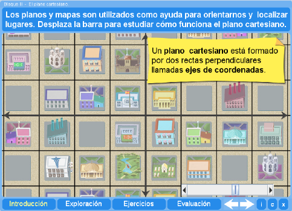
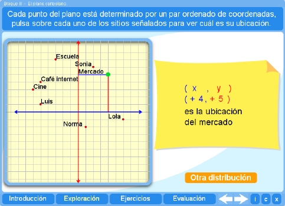
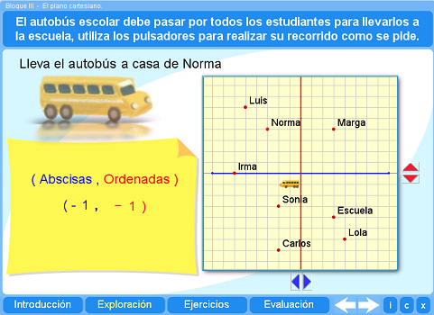
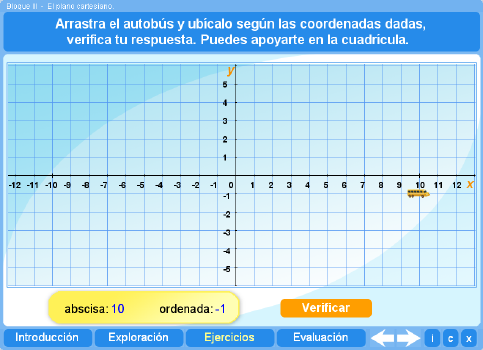
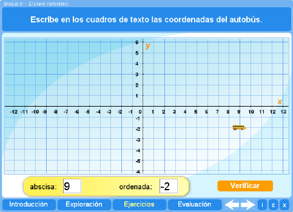
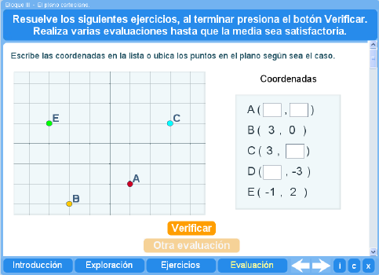

Objetivo
Que los alumnos encuentren las coordenadas cartesianas de un punto dado y ubiquen puntos en el plano dadas sus coordenas.
Instrucciones generales
Se puede navegar entre los apartados con el menú de la parte inferior. Este menú aparece a lo largo de todo el interactivo y conserva su funcionalidad.

También se puede navegar por las escenas por medio de las flechas de navegación que aparecen en el lado inferior derecho del interactivo. Dentro de los apartados Exploración y Ejercicios es necesario utilizar estas flechas para acceder a las escenas sucesivas de dichos apartados.

En la parte inferior derecha del interactivo se encuentran los siguientes botones:
| Muestra la documentación del interactivo. | |
| Despliega los créditos correspondientes a este interactivo. | |
| Cierra el interactivo. |
Contenidos
Introducción
Conforme se desplaza la barra se presenta información sobre qué es un plano cartesiano, sus elementos y la manera de escribir las coordenadas de un punto.

Exploración 1
El alumno puede dar clic sobre cada uno de los puntos que se presentan para leer cuál es la posición de cada sitio..

Exploración 2
El alumno puede mover el bus para recoger a los estudiantes y observar las coordenadas del sitio donde se encuentran.

Ejercicio 1
El alumno puede practicar la ubicación de puntos en el plano cartesiano.

Ejercicio 2
El alumno puede debe escribir las coordenadas del autobús.

Evaluación
En la evaluación el alumno deberá leer y escribir coordenadas de varios puntos.

Los datos son aleatorios y el estudiante podrá realizar tantas evaluaciones como quiera. El programa lleva control de los resultados de cada evaluación y la nota media.
| Los materiales aquí presentados utilizan el applet Descartes Web 2.0. | |

|
Los contenidos de esta unidad didáctica están bajo una licencia de Creative Commons. |